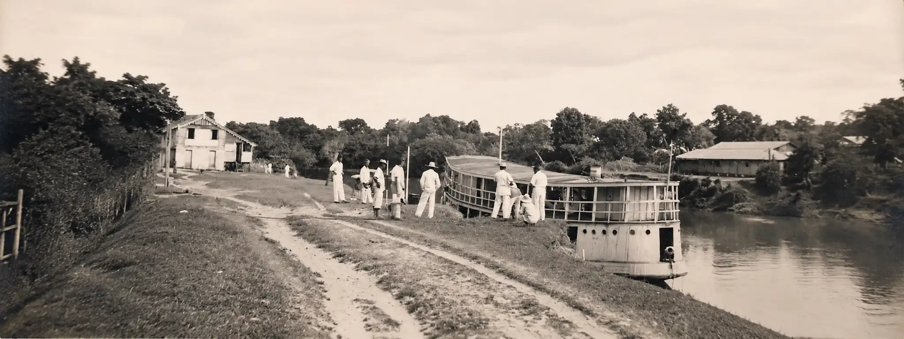
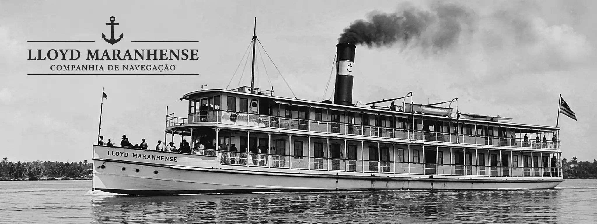
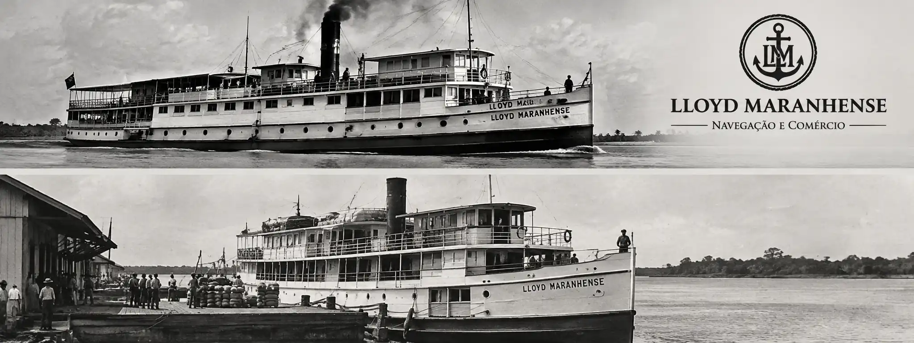
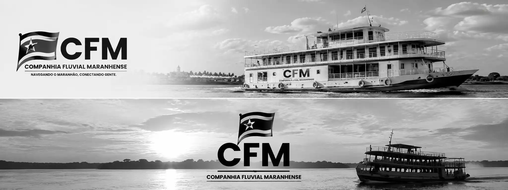
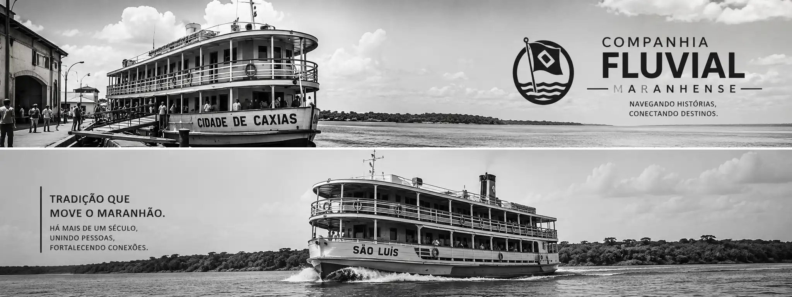
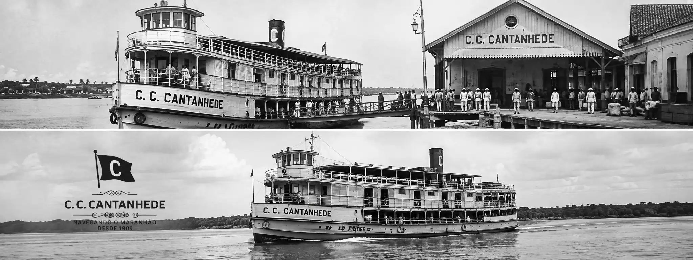

Antes da expansão das rodovias, os rios eram importantes vias de circulação no Maranhão. Embarcações a vapor transportavam pessoas e mercadorias, ligando São Luís a localidades do interior e contribuindo para a atividade comercial e o abastecimento regional.
Entre as empresas ligadas a esse setor estavam a Companhia Fluvial Maranhense e a Empresa Lloyd Maranhense. Embora atuassem no mesmo ramo e em algumas rotas semelhantes, eram empresas distintas.






1. Companhia Fluvial Maranhense
A Companhia Fluvial Maranhense surgiu a partir da transformação de uma empresa de navegação a vapor chamada Moreira da Silva & Cia. Seus estatutos foram aprovados em 1881, e a companhia passou a funcionar em 1882.
Sua atividade estava ligada ao transporte fluvial de passageiros e cargas. A navegação por rios como o Itapecuru, o Mearim e o Pindaré ajudava a conectar diferentes localidades maranhenses.
Contexto: os barcos a vapor eram fundamentais em regiões onde as estradas eram escassas, precárias ou demoradas para percorrer.
2. Empresa Lloyd Maranhense
A Empresa Lloyd Maranhense, sediada em São Luís, também atuou na navegação fluvial. Em 12 de março de 1924, foi autorizada a celebração de um contrato para a operação de linhas regulares em rios do Maranhão.
Rotas previstas no contrato de 1924
São Luís – Caxias
Rio Itapecuru · duas viagens mensais de ida e volta.
São Luís – Pedreiras
Rio Mearim · uma viagem mensal de ida e volta.
São Luís – Engenho Central
Rio Pindaré · uma viagem mensal de ida e volta.
São Luís – Morros
Rio Munim · uma viagem mensal de ida e volta.
Essas linhas buscavam atender ao transporte de passageiros e mercadorias, favorecendo o abastecimento das localidades e a circulação da produção regional.
3. Mudanças no serviço de navegação
1881–1882
Aprovação dos estatutos e início das atividades da Companhia Fluvial Maranhense, formada a partir de uma empresa anterior de navegação.
1924
Autorização para contratar a Lloyd Maranhense para operar linhas regulares em rios maranhenses.
1934
O governo federal reconheceu o encerramento dos contratos da Lloyd Maranhense, da Companhia Fluvial Maranhense e de outra empresa. Foi autorizada a contratação de uma única empresa para dar continuidade a determinados serviços de navegação.
4. Importância para o Maranhão
Transporte e comunicação
As embarcações conectavam comunidades e cidades que não dispunham de estradas adequadas, facilitando deslocamentos e contatos entre localidades.
Comércio e economia
O transporte fluvial contribuía para levar produtos agrícolas e outras mercadorias aos centros de comércio, além de apoiar o abastecimento das cidades.
Integração do interior
As rotas aproximavam São Luís de localidades do interior, fortalecendo relações econômicas e sociais e tornando os rios parte essencial da infraestrutura regional.
Conclusão
A Companhia Fluvial Maranhense e a Empresa Lloyd Maranhense fizeram parte da história dos transportes no Maranhão. Sua atuação demonstra como a navegação pelos rios foi importante para a circulação de pessoas, o comércio e a conexão entre a capital e o interior antes da predominância do transporte rodoviário.
Observação:
As datas, rotas e denominações devem ser confrontadas com os documentos históricos originais para pesquisas acadêmicas ou genealógicas.